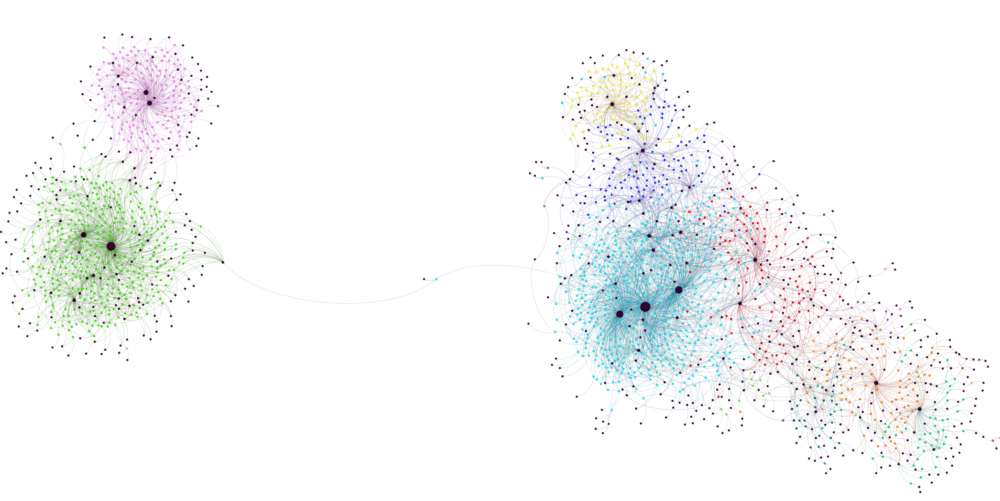
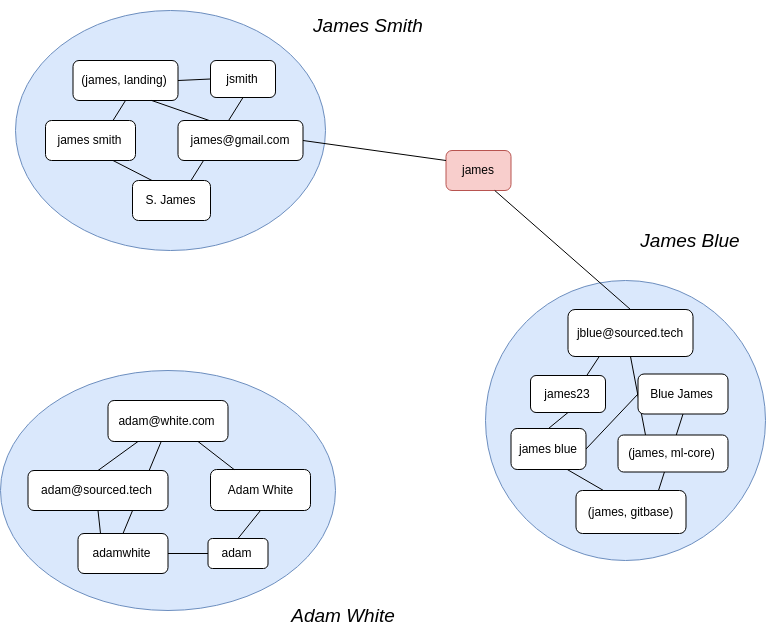
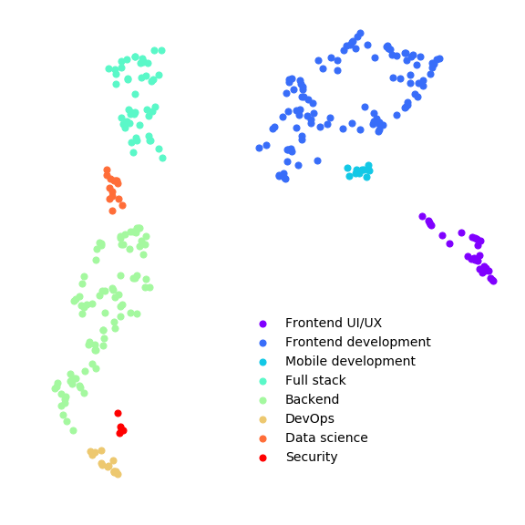
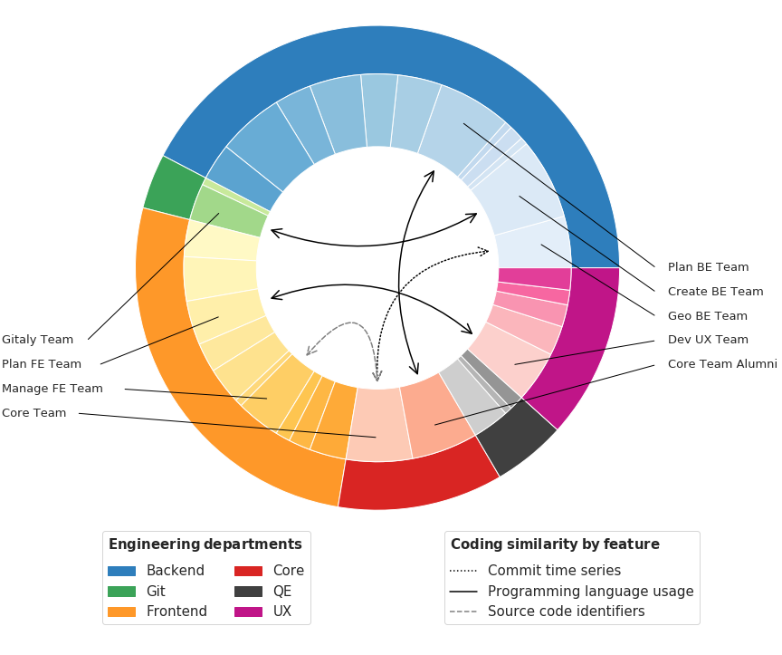

As a Reseach ML Engineer at source{d}, I apply NLP techniques to source code and other types of software engineering artifacts like Git metadata, CI logs or Docker images to gain better visbility and suggest actionnable insights about one codebase. While MLonCode innovations mostly come from academia, source{d} aims to bridge the gap between research and production through open source tools and publicly available machine learning models. In the past, we've developed Lookout, a ML-powered assisted code review framework that learns from your codebase.
Occasionally, I write papers about our research and publish them in Data Mining or ML conferences that we like. I also love to speak in ML meetups or Python related conferences to share both my latest work and my favourite open source tools.
Code clones can be measured at the file, function and snippet levels. According to the conventional classification extracting the natural language elements in code (how developers choose to name entities, for example) and the structure of the code.


Source code reviews are manual, time-consuming, and expensive.

